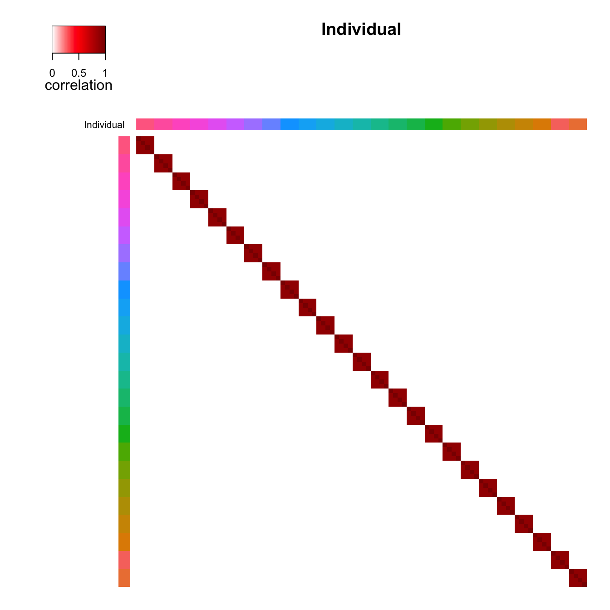
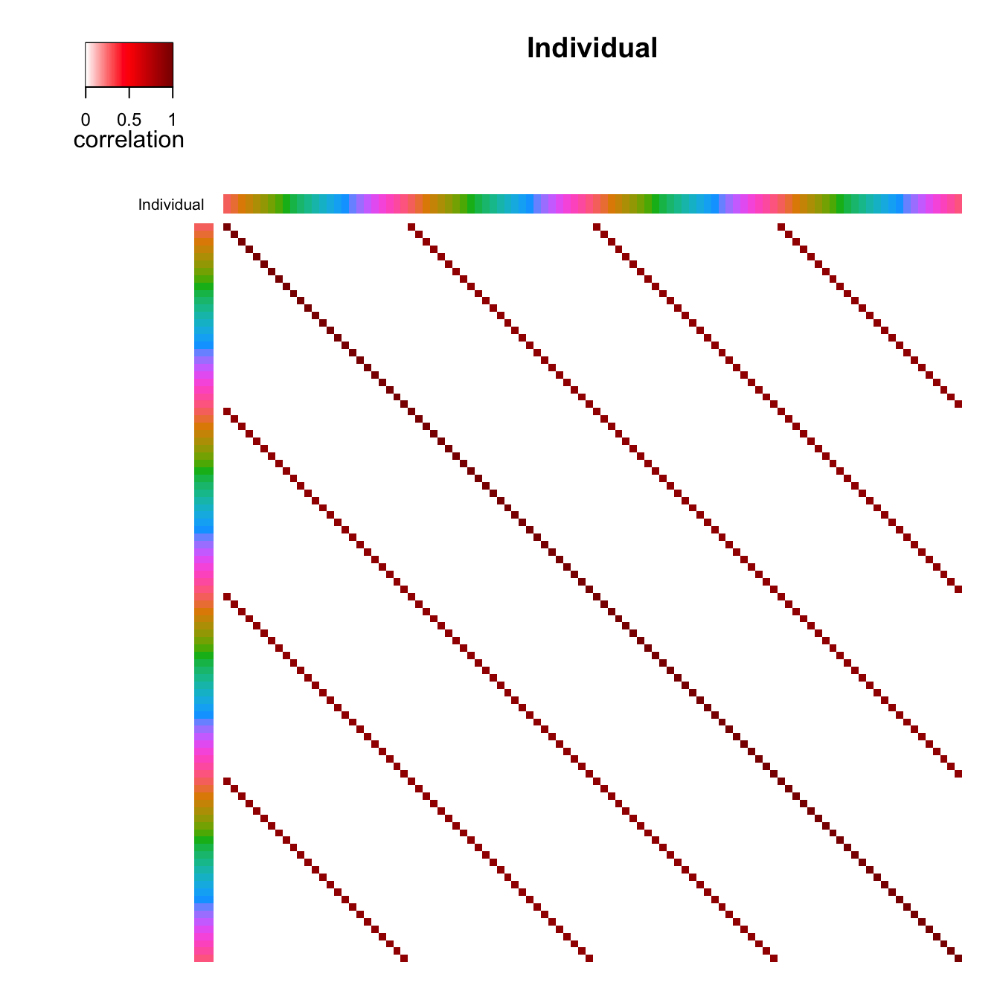
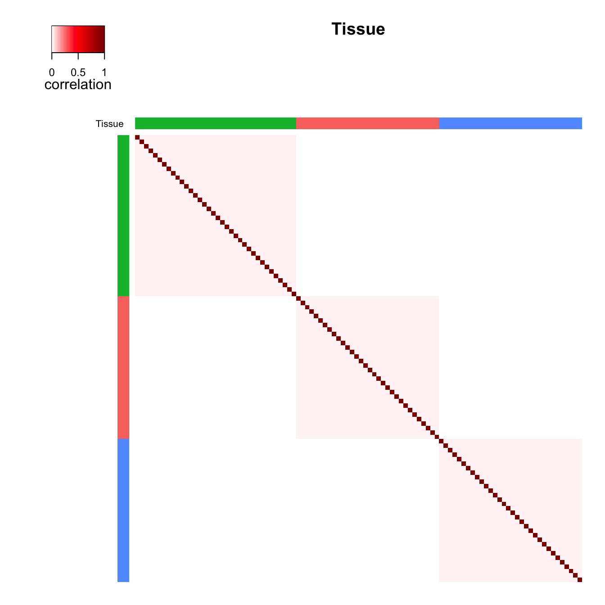
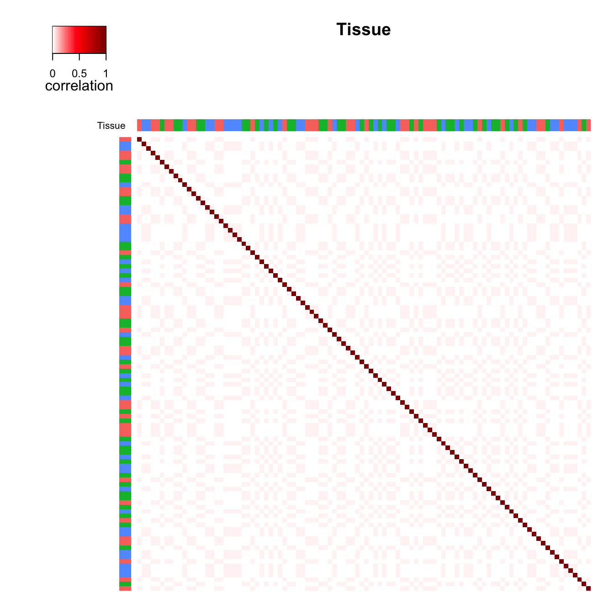
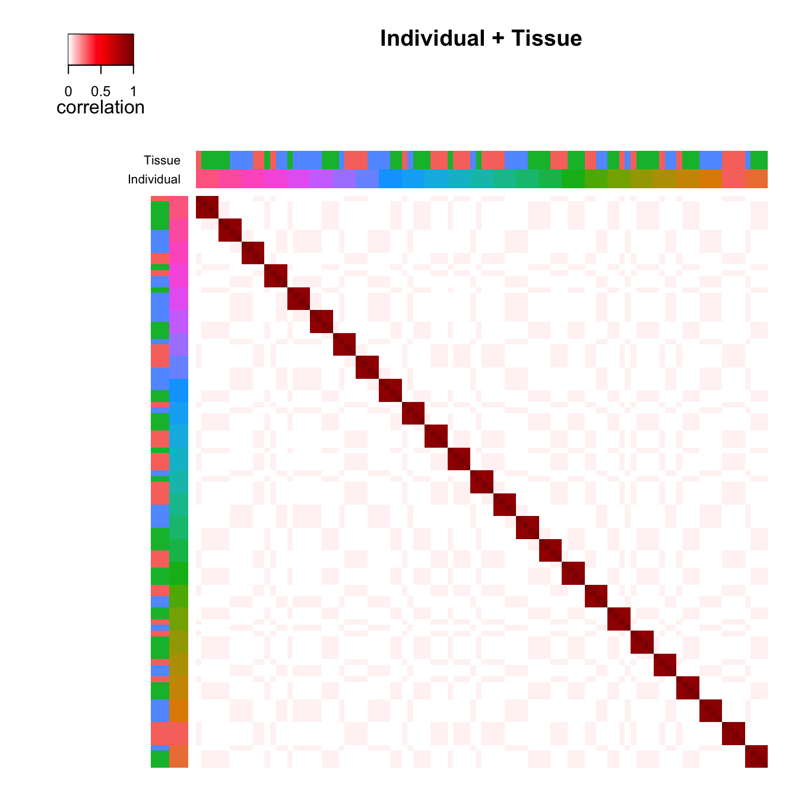
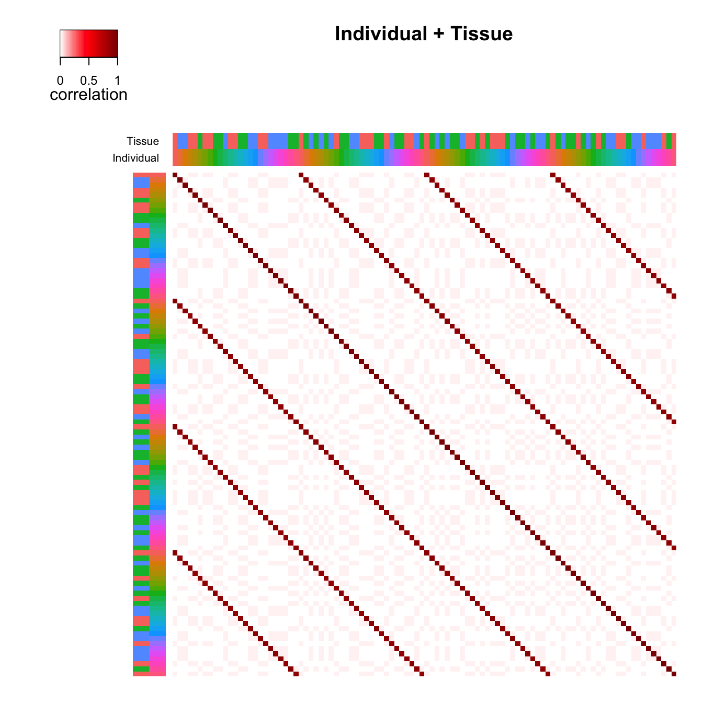

Additional visualizations of variance structure
Developed by Gabriel Hoffman
Run on 2024-05-31 16:11:08
Source:vignettes/additional_visualization.Rmd
additional_visualization.RmdThe correlation structure between samples in complex study designs
can be decomposed into the contribution of multiple dimensions of
variation. variancePartition provides a statistical and
visualization framework to interpret sources of variation. Here I
describe a visualization of the correlation structure between samples
for a single gene.
In the example dataset described in the main vignette, samples are
correlated because they can come from the same individual or the same
tissue. The function plotCorrStructure() shows the
correlation structure caused by each variable as well and the joint
correlation structure. Figure 1 shows the correlation between samples
from the same individual where (a) shows the samples sorted based on
clustering of the correlation matrix and (b) shows the original order.
Figure 1 c) and d) shows the same type of plot except demonstrating the
effect of tissue. The total correlation structure from summing
individual and tissue correlation matricies is shown in Figure 2. The
code to generate these plots is shown below.
Plot variance structure
# Fit linear mixed model and examine correlation stucture
# for one gene
data(varPartData)
form <- ~ Age + (1 | Individual) + (1 | Tissue)
fitList <- fitVarPartModel(geneExpr[1:2, ], form, info)
# focus on one gene
fit <- fitList[[1]]By Individual
Reorder samples
# Figure 1a
# correlation structure based on similarity within Individual
# reorder samples based on clustering
plotCorrStructure(fit, "Individual")
Original order of samples
# Figure 1b
# use original order of samples
plotCorrStructure(fit, "Individual", reorder = FALSE)
By Tissue
Reorder samples
# Figure 1c
# correlation structure based on similarity within Tissue
# reorder samples based on clustering
plotCorrStructure(fit, "Tissue")
Original order of samples
# Figure 1d
# use original order of samples
plotCorrStructure(fit, "Tissue", reorder = FALSE)
By Individual and Tissue
Reorder samples
# Figure 2a
# correlation structure based on similarity within
# Individual *and* Tissue, reorder samples based on clustering
plotCorrStructure(fit)
Original order of samples
# Figure 2b
# use original order of samples
plotCorrStructure(fit, reorder = FALSE)
Session Info
## R version 4.3.0 (2023-04-21)
## Platform: x86_64-apple-darwin22.4.0 (64-bit)
## Running under: macOS 14.5
##
## Matrix products: default
## BLAS: /Users/gabrielhoffman/prog/R-4.3.0/lib/libRblas.dylib
## LAPACK: /usr/local/Cellar/r/4.4.0_1/lib/R/lib/libRlapack.dylib; LAPACK version 3.12.0
##
## locale:
## [1] en_US.UTF-8/en_US.UTF-8/en_US.UTF-8/C/en_US.UTF-8/en_US.UTF-8
##
## time zone: America/New_York
## tzcode source: internal
##
## attached base packages:
## [1] stats graphics grDevices utils datasets methods base
##
## other attached packages:
## [1] variancePartition_1.33.15 BiocParallel_1.34.2
## [3] limma_3.56.2 ggplot2_3.4.4
## [5] knitr_1.43
##
## loaded via a namespace (and not attached):
## [1] tidyselect_1.2.0 dplyr_1.1.2 bitops_1.0-7
## [4] fastmap_1.1.1 digest_0.6.33 lifecycle_1.0.3
## [7] magrittr_2.0.3 compiler_4.3.0 rlang_1.1.1
## [10] sass_0.4.9 tools_4.3.0 utf8_1.2.3
## [13] yaml_2.3.7 htmlwidgets_1.6.2 plyr_1.8.8
## [16] KernSmooth_2.23-21 withr_2.5.0 purrr_1.0.2
## [19] numDeriv_2016.8-1.1 BiocGenerics_0.46.0 desc_1.4.2
## [22] grid_4.3.0 aod_1.3.2 fansi_1.0.4
## [25] caTools_1.18.2 colorspace_2.1-0 scales_1.2.1
## [28] gtools_3.9.4 iterators_1.0.14 MASS_7.3-60
## [31] cli_3.6.1 mvtnorm_1.2-2 rmarkdown_2.22
## [34] ragg_1.2.5 generics_0.1.3 reshape2_1.4.4
## [37] minqa_1.2.5 cachem_1.0.8 stringr_1.5.0
## [40] splines_4.3.0 parallel_4.3.0 matrixStats_1.0.0
## [43] vctrs_0.6.3 boot_1.3-28.1 Matrix_1.6-5
## [46] jsonlite_1.8.5 pbkrtest_0.5.2 systemfonts_1.0.4
## [49] jquerylib_0.1.4 tidyr_1.3.1 glue_1.6.2
## [52] pkgdown_2.0.9 nloptr_2.0.3 codetools_0.2-19
## [55] stringi_1.7.12 gtable_0.3.3 EnvStats_2.7.0
## [58] lme4_1.1-35.1 lmerTest_3.1-3 munsell_0.5.0
## [61] tibble_3.2.1 remaCor_0.0.18 pillar_1.9.0
## [64] htmltools_0.5.8.1 gplots_3.1.3 R6_2.5.1
## [67] textshaping_0.3.6 Rdpack_2.4 rprojroot_2.0.3
## [70] evaluate_0.21 lattice_0.21-8 Biobase_2.60.0
## [73] highr_0.10 rbibutils_2.2.13 backports_1.4.1
## [76] RhpcBLASctl_0.23-42 memoise_2.0.1 broom_1.0.5
## [79] fANCOVA_0.6-1 corpcor_1.6.10 bslib_0.7.0
## [82] Rcpp_1.0.11 nlme_3.1-162 xfun_0.39
## [85] fs_1.6.2 pkgconfig_2.0.3